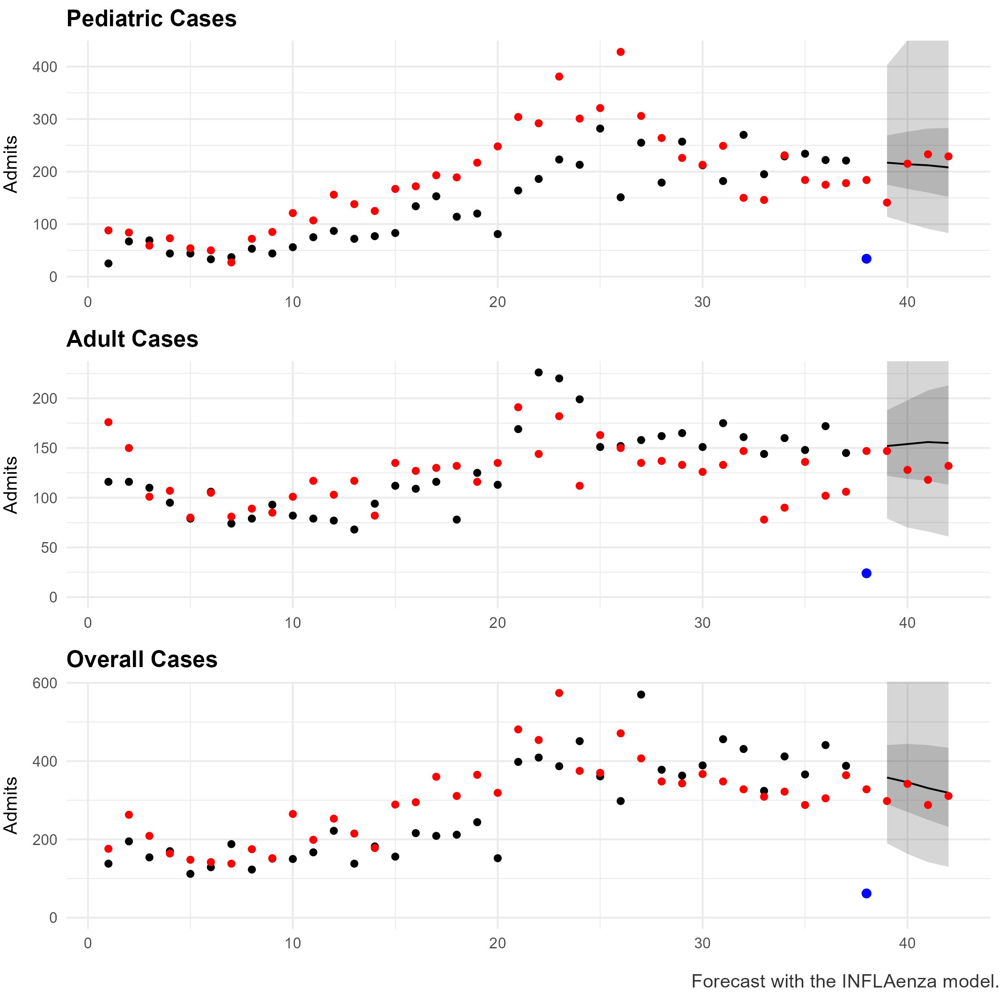

Exercises
exercises.RmdFour Guided MicroHub Exercises
Each exercise is designed for small-group work with a short facilitator debrief. Participants should keep screenshots, notes, and downloaded CSV outputs as they go.
Exercise 1: Upload Surveillance Data and Read the Plot
Goal: Load a MicroHub-compatible CSV and decide whether the most recent data are ready for real-time forecasting.
Data: bangladesh-preferred.csv
- Open MicroHub at http://localhost:3838.
- Go to Data Upload & Settings and upload
bangladesh-preferred.csv. - Confirm the app recognizes the required columns:
date,target_group, andvalue. - Set the forecast date to the most recent available week in the dataset.
- Inspect the visualization for missing weeks, unusual spikes, and the apparent seasonal pattern.
Deliverable: Write down one reason you would use all recent data and one reason you might drop the most recent week.
Exercise 2: Run Baseline Forecasts
Goal: Establish a simple reference forecast before using more complex models.
Data: Continue with bangladesh-preferred.csv.
- In Data Upload & Settings, set forecast horizon to 4 weeks.
- Run the Regular Baseline model and save the plot.
- Run the Optimal Baseline model and compare the median forecast path.
- Run the Seasonal Baseline model if the dataset has enough seasonal history.
- Record which baseline seems most plausible for the current epidemic phase.
Key idea: Baseline models are transparent anchors for evaluating whether a complex model is adding useful information.
Exercise 3: Compare Copycat and INFLAenza
Goal: Compare a historical trajectory-matching model with a Bayesian time-series model.
Data: Use chile-target.csv for a second scenario.
- Upload
chile-target.csvand keep a 4-week forecast horizon. - Run Copycat. Note whether the forecast follows recent growth, decline, or a flatter path.
- Run INFLAenza. Compare the forecast median and uncertainty intervals to Copycat.
- Change Data to Drop from 0 to 1 and rerun one model.
- Discuss how reporting delays can change model interpretation in real time.

Exercise 4: Build an Ensemble and Export Hub-Ready Results
Goal: Combine forecasts, inspect the output format, and prepare a file that could move into a forecasting hub workflow.
- Make sure at least two individual model forecasts have been generated.
- Open the Ensemble tab.
- Select the models to include and run the ensemble.
- Open the Download tab and preview the forecast table.
- Download the combined CSV and compare it to example-forecast-output.csv.
Deliverable: Identify the columns needed by the hub submission format and one check you would run before sharing the file.
Debrief Prompts
- Which model was easiest to explain to a surveillance team?
- Which assumptions felt most important for local use?
- How should forecast date and data-drop settings be chosen during routine reporting?
- What local metadata, target groups, or reporting cadence would need to be added before operational use?